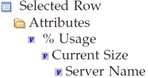

Creating a New Link
Use the link wizard to define a link from a Navigator item, graphic view, or query-based view that opens the targeted workspace in the same or new windows.
Complete these steps to create a new workspace link.
-
Create a new link:
-
Select the link type and target:
- If this is an absolute or relative link and you want to refine the link definition, click Next and add the expressions.
-
If this is a dynamic link, the Target Filters window is displayed for you to
select the type of identifier for the target and specify the value to use:
- Click the identifier to use: Managed system name, Hostname (distributed systems only), IP address (distributed systems only), or SMFID (z/OS-based systems only) If you are not sure which one to choose, click Managed System name.
- Click Modify Expression to open the Expression Editor, then click Symbol. The list is a reverse hierarchy of available symbols starting from the source context and the current Navigator item and ending at the root Navigator item.
-
Select a symbol that provides the value for the
system identifier. For example, Server Name will provide the
value needed for Managed system name when the link is launched.
You might need to open different branches to locate a symbol for the
type of target filter chosen. 
-
Click OK add the detailed name for the attribute to the
Expression Editor.
$kfw.TableRow:ATTRIBUTE.NTLOGINFO.ORIGINNODE$ -
Click Evaluate to verify that the variable resolves correctly.
The Value shown must be valid for the identifier type you specified. For
example, for a computer named MARVELUSER,
Primary:MARVELUSER:NTis a valid Windows OS managed system name and MARVELUSER is a valid host name. - If no value is displayed or you get a syntax error or a value that does not identify the system, click Clear and select a different symbol or try another identifier.
- In addition to Symbol, you can click Operator and Function to find and select other elements to complete the expression. When you are finished with the expression, click OK to insert the expression in the current target filter row. Note that expressions can evaluate to patterns using the asterisk (*) and question mark (?) wildcard characters. This allows for pattern matching filters.
- If the target workspace was updated or is new for the latest version of your monitoring product and your environment has a mix of versions, you can disable Allow this link to target any version of the target workspace or leave it enabled: Enabled is the default setting. The target workspace can be chosen for any version of the monitoring agent. If the query for a view specifies attributes that are available only in the newer version and the target workspace is for an older version of the monitoring agent, no values will be returned for those attributes. Disable the option if you want the link not to be offered for target workspaces on earlier versions of the monitoring agent.
- Click Next and refine the link definition; or click Next twice and review the summary.
- In the Workspace Link Wizard - Summary page, review the summary, then click Finish to save the link definition, Back to return to a previous window to make additional changes, or Cancel to close the Link Wizard without saving your changes.